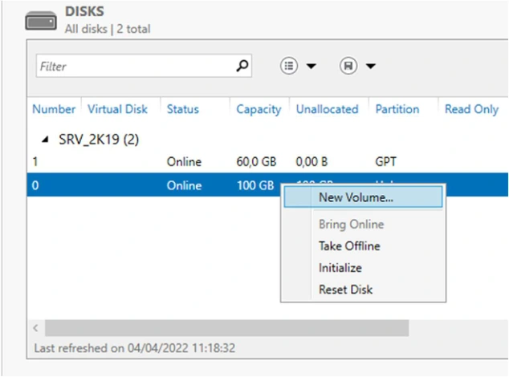
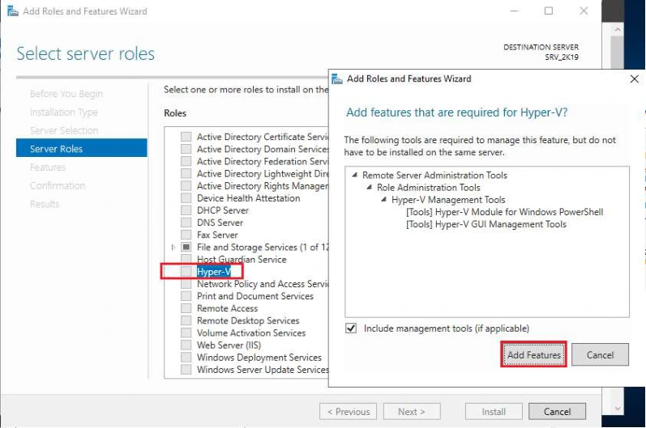
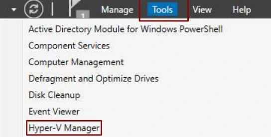

Module 04 — Découverte d’Hyper-V¶
La transcription du support Drive et l’aide pédagogique sont séparées pour rendre leur provenance explicite.
SOURCE DRIVE · TRANSCRIPTION DU SUPPORT
Le contenu des documents du dossier TSSR est transcrit ci-dessous, page par page. Les textes et tableaux sont intégrés à la page Web. Aucun fichier PDF, aucune diapositive entière ni aucune reproduction de page n’est affiché. Seuls des croquis ou visuels isolés et vérifiés peuvent accompagner la transcription. Les versions et les consignes restent celles des supports de formation. Les compléments IA sont conservés dans leur onglet distinct.
Support · Module 04 - Support de cours · 5 pages transcrites
Module 04 – Découverte d’Hyper-V
Découverte d’Hyper-V
Objectifs
- Découvrir Hyper-V 2019
Prérequis et installation
Découverte d’Hyper-V
Prérequis matériel
Installation
- Versions : Hyper-V v2 (W2008 R2), Hyper-V v3 (W8, W2012)
- Pour les serveurs, rôle intégré à installer avec le
gestionnaire de serveur
- Pour le client Windows 8, fonctionnalité intégrée à activer
- Processeur 64 bits Intel VT-x ou AMD-V (attention aux réglages BIOS / UEFI)
- CPU, RAM et espace disque adaptés
Prérequis logiciel
- Un système Windows Serveur (W2008 et supérieur)
- Ou un système Windows 8 Pro 64bits (+SLAT Second Level Address Translation)
Lors de l’installation du rôle, 2 redémarrages sont nécessaires pour permettre le démarrage de l’hyperviseur en mode natif (type 1)
Découverte d’Hyper-V
Utilisation et mise en œuvre
- Interaction avec le système hôte
- Les médias amovibles USB ne sont pas gérés avec la v2 (W2008 R2)
- Touche de bascule : Ctrl + Alt + Gauche
- Services d’intégration (selon la compatibilité des systèmes hôtes)
- Fonctionnalités
- Chaque VM peut être affichée dans une console séparée
- Gestion poussée des paramètres matériels (BIOS, mémoire …)
- Capture instantanée
- Importation et exportation (obligatoire avec la v2 pour la copie ou le transfert)
- Spécificités
- Outil « serveur » orienté administrateur, moins convivial
- Fichiers des VM difficilement manipulables manuellement
- Pour faire « Ctrl + Alt + Suppr » dans la VM, taper Ctrl + Alt + Fin
Découverte d’Hyper-V
Paramétrages réseau
Types de réseau virtuel
- Identification des LAN pour les réseaux internes et externes (VLAN)
- Réseau privé : réseau entre les invités uniquement
- Interne uniquement : réseau interne avec connexion à l’hôte, les VM ne peuvent communiquer qu’entre elles et avec l’hôte (Host-only)
- Externe : équivalent à une connexion au réseau physique (Bridged)
- Externe dédié : la carte réseau externe est associée de manière exclusive à une carte physique de l’hôte
Découverte d’Hyper-V
Étapes de configuration
- Définition des réseaux virtuels
- Avec l’outil gestionnaire de
réseau virtuel (volet de droite de
la console)
- Non définis par défaut, à créer selon les besoins
- Un seul réseau externe est possible par carte réseau hôte
- (Hyper-V « s’approprie » la carte réseau physique)
- Création des machines virtuelles
- Avec l’assistant Nouveau >
Ordinateur virtuel
- Définir l’emplacement de stockage et les paramètres matériels
Le disque d’amorçage d’une machine virtuelle de première génération est obligatoirement sur une interface de type IDE.
Découverte d’Hyper-V
Console de gestion
Liste des serveurs
Liste et état des VM
Gestion du serveur
Informations sur la VM sélectionnée
Gestion de la VM
Découverte d’Hyper-V
Console d’ordinateur virtuel
Gestion de base
Gestion de la fenêtre, la fermeture n’arrête pas la VM
Gestion des paramètres et du matériel
Découverte d’Hyper-V
Exportation et importation
- Des manipulations plus contraignantes (avec Hyper-V v3)
- Pour pouvoir être dupliquée ou déplacée, une VM doit être exportée
- Pour pouvoir importer, il faut disposer des fichiers de configuration
- L’importation sans « Dupliquer tous les fichiers … » empêche de réimporter la même VM
- L’option « Dupliquer tous les fichiers … » permet d’utiliser plusieurs fois la même VM exportée, MAIS les disques VHD sont alors copiés dans un même emplacement
- Exemple de procédure
- Exporter la VM dans un emplacement dédié
- Copier le répertoire contenant la VM à l’emplacement voulu
- Importer la VM sans « Dupliquer les fichiers … »
Attention à bien sélectionner le dossier contenant tous les fichiers
Référence du document : 1aneTKvR2P5nHtruMxJcArjnBcQSBnWoJ · SHA-256 3077cf07986b4a78…
Énoncé · TSSR110-Virtualisation_Mise en Situation – Module 4 – Hyper-V · 3 pages transcrites
Énoncé :
Atelier N°2
TP du Module 04 – Découverte d’Hyper-V
Avant de démarrer ce TP, il convient d’avoir suivi les prérequis du Module 4.
Durée estimée
1 heure
Objectif :
Mise en place et découverte d’un hyperviseur Microsoft Hyper-V, appréhender les menus de configuration.
Prérequis :
Disposer de la machine virtuelle « SRV_2K19 » créée au module 2.
Énoncé :
Sous VMware Workstation
- Augmenter la taille de la mémoire vive à 8 Go de la VM « SRV_2K19 ».
- Lui ajouter un 2ème disque dur de type SCSI de 100 Go.
- Démarrer « SRV_2K19 ».
Remarque
Pour des raisons inhérentes au fonctionnement des machines mises à disposition par l’centre de formation, la mise en œuvre de l’outil de virtualisation Hyper-V sera réalisée exclusivement dans la machine virtuelle « SRV_2K19 ». Dans une « vraie » situation d’entreprise, cet hyperviseur serait déployé sur un serveur physique.
Dans la VM SRV_2K19
- A partir du nouveau disque, créer un volume appelé « DATA ».
- Installer le rôle Hyper-V et utiliser la carte réseau « ethernet0 » comme switch virtuel. Vous ne permettrez pas l’usage de la migration à chaud des VMs.
- Définir l’emplacement de stockage des VMs sur le volume « DATA » dans un dossier « VMs ».
- Stocker les disques durs des VMs dans le dossier « VHDs ».
- Placer l’image ISO du système Windows Server 2019 sur le bureau de la VM.
- Créer une VM avec Hyper-V nommée « SRV_2K19-HV1 » et modifier les paramètres comme suit :
- « Generation 2 »
- 2 Go de mémoire non dynamique
- carte réseau connecté à la carte Intel
- disque dur virtuel VHDx de 32 Go
- Installer un système d’exploitation en indiquant l’image ISO du système Windows Server 2019 placée précédemment sur le bureau.
- Démarrer la VM Hyper-V, s’y placer et lancer l’installation du système.
- Une fois l’installation terminée, exécuter le programme SYSPREP. Y cocher la case « generalize » et sélectionner « shutdown ».
- Exporter la machine virtuelle dans le dossier que vous créerez pour l’occasion « VMs/EXPORT/Machines virtuelles » du volume DATA.
- Attendre la fin de l’export (cela peut prendre 5 mn, même si on ne voit aucune information sur l’avancement), puis déployer une nouvelle VM à l’aide du menu « Import Virtual Machine » en indiquant le chemin contenant la VM exportée précédemment.
- Sélectionner « Copy the virtual machine » et indiquer les nouveaux emplacements pour les fichiers de la VM, toujours à partir des dossiers par défaut (VMs et VHDs), mais dans des sous-dossiers nommés « SRV_2K19-HV2).
- Renommer cette nouvelle VM en « SRV_2K19-HV2 ».
- Démarrer les deux machines virtuelles, relever leurs adresses IPs et effectuer un test de liaison ping entre elles. La liaison doit être fonctionnelle. Si ce n’est pas le cas, vérifier les pare-feux Windows.
- Effectuer un snapshot avec VMware Workstation de la VM « SRV_2K19 » à nommer « Fin
atelier 2 ».
Schéma
Référence du document : 1uxZIcSvTmR1tcXuuol2PnKzKJggAnMLf · SHA-256 f4d4ade5ba101682…
Correction · TSSR110-Virtualisation_Mise en Situation – Module 4 – Hyper-V - Solution · 15 pages transcrites
Correction originale : à consulter après avoir tenté l’exercice.
Solutions
Atelier N°2
TP du Module 04 – Découverte d’Hyper-V
Avant de démarrer ce TP, il convient d’avoir suivi les prérequis du Module 4.
Durée estimée
1 heure
Objectif :
Mise en place et découverte d’un hyperviseur Microsoft Hyper-V, appréhender les menus de configuration.
Prérequis :
Disposer de la machine virtuelle « SRV_2K19 » créée au module 2.
Énoncé :
Sous VMware Workstation
- Augmenter la taille de la mémoire vive à 8 Go de la VM « SRV_2K19 ».
- Lui ajouter un 2ème disque dur de type SCSI de 100 Go.
- Démarrer « SRV_2K19 ».
Dans la VM SRV_2K19
- A partir du nouveau disque, créer un volume appelé « DATA ».


- Installer le rôle Hyper-V et utiliser la carte réseau « ethernet0 » comme switch virtuel. Vous ne permettrez pas l’usage de la migration à chaud des VMs.
- Installer le rôle Hyper-V et utiliser la carte réseau « ethernet0 » comme switch virtuel. Vous ne permettrez pas l’usage de la migration à chaud des VMs.


- Définir l’emplacement de stockage des VMs sur le volume « DATA » dans un dossier « VMs ».
- Stocker les disques durs des VMs dans le dossier « VHDs ».
Informations dans les visuels du support
- Dans Default Stores, indiquer D:\VHDs pour les disques virtuels et D:\VMs pour la configuration des machines virtuelles.
- Dans Confirm installation selections, vérifier Hyper-V et les outils d’administration. Cocher le redémarrage automatique si nécessaire, puis confirmer et lancer l’installation.
- Placer l’image ISO du système Windows Server 2019 sur le bureau de la VM
- Créer une VM avec Hyper-V nommée « SRV_2K19-HV1 » et modifier les paramètres comme suit :
- « Generation 2 »
- 2 Go de mémoire non dynamique
- carte réseau connecté à la carte Intel
- disque dur virtuel VHDx de 32 Go


Informations dans les visuels du support
- Dans le Gestionnaire Hyper-V, choisir New puis Virtual Machine. Avancer depuis Before You Begin.
- Dans Specify Generation, sélectionner Generation 2. L’assistant précise que la génération reste fixée après la création de la machine.
Informations dans les visuels du support
- Dans Assign Memory, allouer 2048 Mo et laisser Use Dynamic Memory désactivé.
- Dans Configure Networking, choisir le commutateur virtuel associé à l’adaptateur Intel(R) 82574L Gigabit Network Connection.
- Installer un système d’exploitation en indiquant l’image ISO du système Windows Server 2019 placée précédemment sur le bureau.
- Démarrer la VM Hyper-V, s’y placer et lancer l’installation du système.
- Une fois l’installation terminée, exécuter le programme SYSPREP. Y cocher la case « generalize » et sélectionner « shutdown ».
L’application est située dans C:\Windows\System32\Sysprep
- Exporter la machine virtuelle dans le dossier que vous créerez pour l’occasion « VMs/EXPORT/Machines virtuelles » du volume DATA.
- Attendre la fin de l’export (cela peut prendre 5 mn, même si on ne voit aucune information sur l’avancement), puis déployer une nouvelle VM à l’aide du menu « Import Virtual Machine » en indiquant le chemin contenant la VM exportée précédemment.
- Sélectionner « Copy the virtual machine » et indiquer les nouveaux emplacements pour les fichiers de la VM, toujours à partir des dossiers par défaut (VMs et VHDs), mais dans des sous-dossiers nommés « SRV_2K19-HV2).
- Renommer cette nouvelle VM en « SRV_2K19-HV2 »
- Démarrer les deux machines virtuelles, relever leurs adresses IPs et effectuer un test de liaison ping entre elles. La liaison doit être fonctionnelle. Si ce n’est pas le cas, vérifier les pare-feux Windows.
Référence du document : 1142XOvU2ghSaqE4CYnISjPMk-fTJ-r5J · SHA-256 72b258309cf45e03…
Complément IA / externe au cours — fiche pédagogique du portail
Cette fiche contient une reformulation et des aides d’apprentissage rédigées par IA. Elle est distincte de la transcription des documents du Drive et ne la remplace pas. Les schémas de synthèse de cette fiche sont des illustrations IA / externes au cours, sauf les captures explicitement attribuées à un document source.
L’atelier reprend la VM Windows Server 2019 du module 2 et y installe Hyper-V. Dans cette maquette, Workstation héberge la VM Windows, qui héberge à son tour deux invités Hyper-V.
Objectifs¶
- Préparer les ressources et installer le rôle Hyper-V.
- Repérer la console, les réglages d’une VM et les types de commutateurs virtuels.
- Créer une VM de génération 2, puis produire une seconde VM par export et import.
- Vérifier la communication entre les invités et identifier le snapshot final.
1. Préparer l’hôte Hyper-V¶
Le support présente les extensions Intel VT-x ou AMD-V, les réglages BIOS/UEFI, la mémoire, le processeur et l’espace disque. Les rappels Hyper-V v2 sous Windows Server 2008 R2, Hyper-V v3 sous Windows 8 ou Windows Server 2012 et SLAT situent les exemples du support. Le TP travaille sous Windows Server 2019.
| Environnement | Installation présentée |
|---|---|
| Windows Server | Ajouter le rôle Hyper-V depuis le Gestionnaire de serveur. |
| Client Windows cité dans le support | Activer Hyper-V dans les fonctionnalités du système. |
| Atelier imbriqué | Préparer la VM Workstation et vérifier que ses extensions de virtualisation sont exposées avant d’ajouter le rôle. |
Le support mentionne deux redémarrages dans son scénario historique. Dans le laboratoire, suivre l’assistant puis vérifier que le rôle démarre et que la console gère l’hôte. Si l’installation échoue pour cause de fonctionnalités processeur, vérifier la virtualisation imbriquée sur l’hôte extérieur. Dépannage de la virtualisation imbriquée Hyper-V
2. Lire la console et choisir le commutateur¶
Le Gestionnaire Hyper-V réunit les hôtes, la liste et l’état des VM, les réglages et les actions. La connexion à la machine virtuelle ouvre sa console. Fermer cette fenêtre laisse la VM dans son état d’exécution. Le support cite Ctrl + Alt + Gauche pour la bascule et Ctrl + Alt + Fin pour envoyer Ctrl + Alt + Suppr à l’invité.
Le cours décrit le matériel, les services d’intégration, les points de contrôle, l’import et l’export. Il situe la limite sur l’USB amovible dans le contexte de Hyper-V v2.
| Type présenté | Portée |
|---|---|
| Privé | Entre les VM du commutateur. |
| Interne | Entre ces VM et leur hôte Hyper-V. |
| Externe | Liaison au réseau physique via une carte choisie. |
| Externe dédié | Carte physique réservée à ce raccordement dans le montage présenté. |
Le support aborde l’identification VLAN pour les réseaux internes et externes. Dans l’atelier, le commutateur externe est associé à la carte Intel du serveur imbriqué. La migration à chaud reste désactivée.
Illustration IA / externe au cours — montage du laboratoire.
3. Choisir génération, disque et mode d’import¶
Le support évoque le disque d’amorçage IDE d’une VM de première génération. L’atelier choisit une génération 2, avec amorçage UEFI et disque virtuel SCSI. Vérifier la compatibilité du système invité au moment de la création. Choisir la génération d’une VM Hyper-V
Un export rassemble la configuration et les fichiers nécessaires au déplacement ou à la duplication. Le support historique décrit un import sans duplication des fichiers dans son exemple. Le TP demande Copy the virtual machine. Ce mode crée une nouvelle identité de VM, avec des emplacements à contrôler pour éviter de réutiliser le disque de la première. Exporter et importer une VM Hyper-V
4. TP guidé — Installer Hyper-V et dupliquer un invité¶
Durée du support. Environ une heure. Prendre la VM SRV_2K19 préparée au module 2 et l’ISO Windows Server 2019 de laboratoire.
A. Préparer le serveur¶
- Dans Workstation, porter la mémoire de
SRV_2K19à 8 Go et ajouter un second disque SCSI de 100 Go. - Démarrer la VM hôte. Identifier le disque ajouté avant de créer le volume
DATA. - Installer le rôle Hyper-V. Sélectionner l’interface Intel pour le commutateur externe et laisser la migration à chaud désactivée.
- Placer les configurations dans
<VOLUME_DATA>\VMset les disques dans<VOLUME_DATA>\VHDs. Préparer l’ISO sur le bureau de la VM hôte. - Après redémarrage, ouvrir le Gestionnaire Hyper-V. Vérifier l’hôte, le commutateur et les chemins avant la création de l’invité.
B. Créer et installer SRV_2K19-HV1¶
| Paramètre | Valeur du TP |
|---|---|
| Génération | 2 |
| Mémoire | 2 Go fixes |
| Réseau | Commutateur externe associé à la carte Intel |
| Disque | VHDX de 32 Go |
| Média | ISO Windows Server 2019 de laboratoire |
Créer l’ordinateur virtuel, lancer sa console et installer Windows Server 2019. Contrôler le premier démarrage et la présence des fichiers sur le volume prévu.
C. Généraliser et créer la copie¶
- Dans HV1, lancer Sysprep. Choisir Generalize et Shutdown.
- Quand l’invité est arrêté, l’exporter dans le dossier
EXPORTprévu sousVMs. Attendre que les fichiers de l’export soient disponibles. - Ouvrir Import Virtual Machine. Pointer vers le répertoire contenant l’export, puis choisir Copy the virtual machine.
- Donner à la copie des dossiers propres sous
VMsetVHDs. La renommerSRV_2K19-HV2. - Vérifier que les deux VM figurent dans l’inventaire, utilisent des fichiers distincts et démarrent.
D. Prouver la communication et garder l’état final¶
Relever l’adresse de chaque invité dans sa console, puis envoyer un ping vers l’adresse de l’autre invité. En cas d’échec, vérifier d’abord le commutateur, l’adressage et le pare-feu Windows du laboratoire. La capture de la solution montre un ping vers une adresse affichée aussi comme passerelle. Cette preuve ne suffit pas pour valider la communication demandée.
Créer ensuite le snapshot Fin atelier 2 de la VM hôte Workstation SRV_2K19, comme le demande l’énoncé. La solution ne montre pas cette dernière étape. Le snapshot demandé se trouve dans Workstation. Un point de contrôle d’un invité Hyper-V porte sur un autre objet.
À retenir¶
- Le commutateur externe relie les invités au segment prévu.
- L’export produit les fichiers nécessaires à l’import. Le mode copie et les dossiers séparés permettent de garder deux VM.
- La preuve réseau vise l’adresse de l’autre invité, et le snapshot final concerne la VM hôte Workstation.
Mini-quiz — 5 questions¶
- À quel niveau contrôler les extensions de virtualisation si Hyper-V ne s’installe pas dans
SRV_2K19? - Quel type de commutateur relie les invités au réseau physique choisi ?
- Quelle génération et quel disque utilise le premier invité du TP ?
- Quel mode d’import permet de garder l’original et la copie ?
- Quelles deux preuves permettent de conclure l’atelier ?
Réponses commentées
- Sur le processeur de l’hôte physique et dans les réglages d’exposition des extensions à la VM Workstation.
- Un commutateur externe associé à la carte Intel prévue.
- Génération 2 et VHDX de 32 Go, avec 2 Go de mémoire fixe dans ce laboratoire.
- Copy the virtual machine. Vérifier aussi les emplacements de configuration et de disque de la seconde VM.
- Un ping entre les adresses relevées sur les deux invités et le snapshot de la VM hôte Workstation demandé par l’énoncé.
Pour pratiquer et réviser¶
- Énoncé de l’atelier Hyper-V et correction
- Fiche de révision
- Kahoot existant
- Sommaire de Virtualisation de serveurs
Provenance pédagogique¶
Le support M04 et l’atelier 2 donnent les réglages, consignes et captures. Le schéma de la maquette et les vérifications intermédiaires explicitent le scénario. Les précisions sur les générations et l’import sont documentées par Microsoft.
M04 — Découverte d’Hyper-V
17 questions
Teste tes connaissances sur ce module.